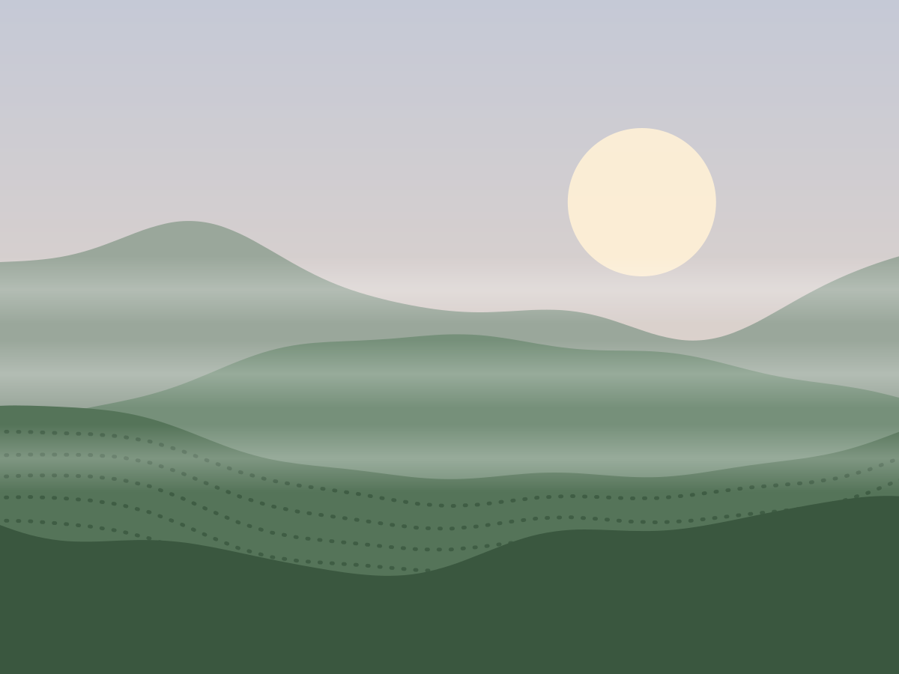
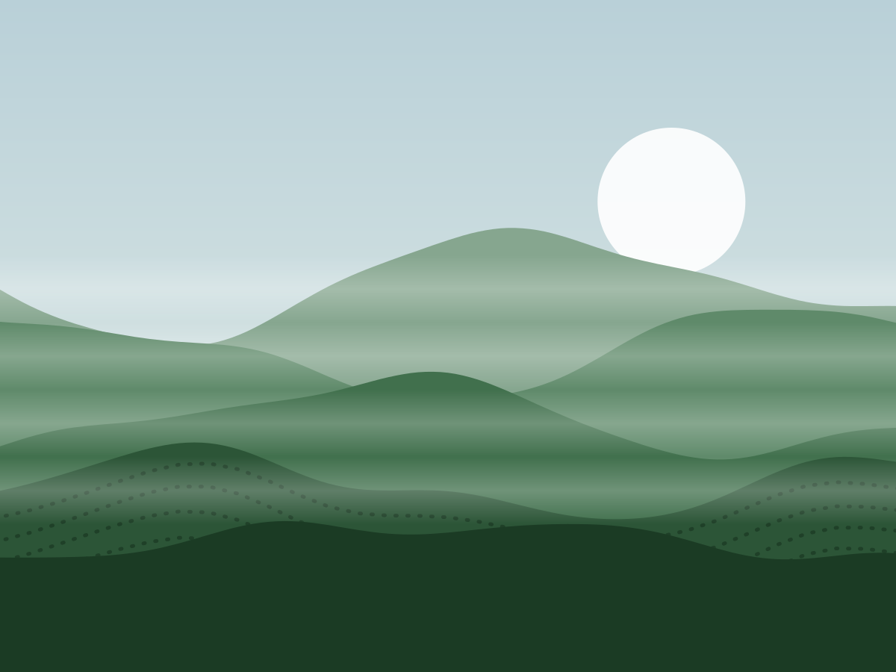
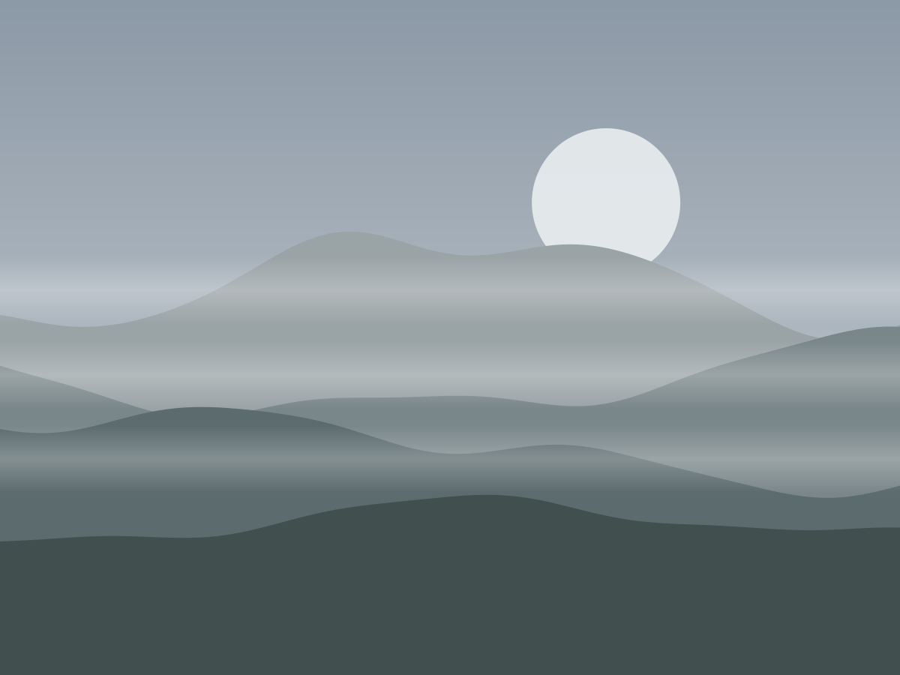
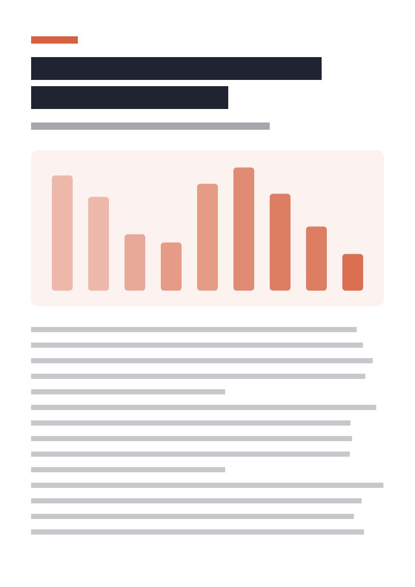

Kopi Tanah Tinggi · “Dari Lereng”
Kampanye yang dipotret di tiga kebun di Pangalengan; 12 juta tayangan video.
Masalah
Roastery kecil dari Pangalengan ingin dikenal di luar Bandung tanpa terlihat seperti merek kopi kota. Briefnya satu kalimat: tunjukkan lerengnya.
Peran saya
- Mengarahkan konsep, naskah, dan visual kampanye.
- Memotret 3 kebun selama 6 pagi, dari subuh hingga panen.
- Mengawasi suntingan video dan materi toko.
- Tayangan video
- 12 jtnaik, baik: 8 minggu
- 8 minggu pertama
- Penjualan daring
- +40%naik, baik: +40%
- satu kuartal
- Biaya produksi
- −35%turun, baik: −35%
- studio internal



Proses
Kami tinggal tiga hari di Pangalengan dan memotret sebelum pukul tujuh, saat kabut masih turun dan cahaya masih biru.
Tidak ada model: semua wajah di kampanye adalah pemetik dan pemilik kebun, dengan izin tertulis.
Cahaya pukul enam pagi melakukan separuh pekerjaan kami.
Pemutar Vimeo baru dimuat setelah tombol putar diklik.

Proyek lengkap dengan 40 foto dan kredit tim.
behance.netHasil
Video kampanye ditonton 12 juta kali dalam delapan minggu. Penjualan daring naik 40% dalam satu kuartal, dan biaya produksi turun 35% berkat studio internal.